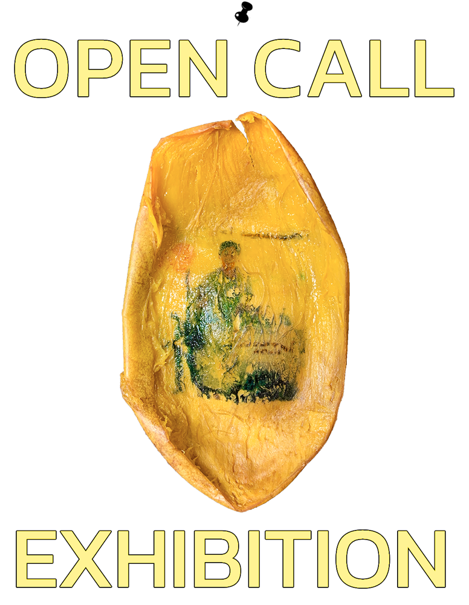
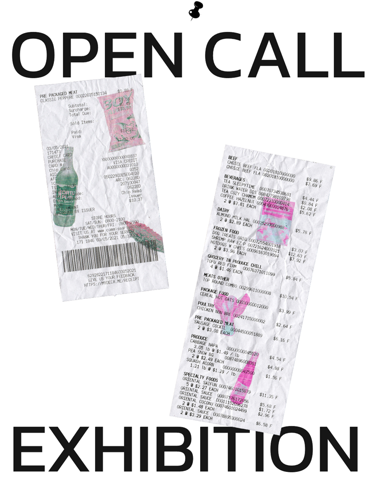
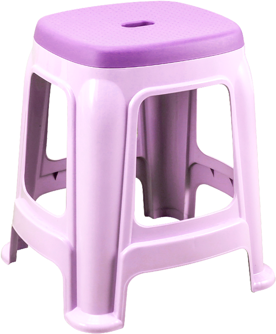
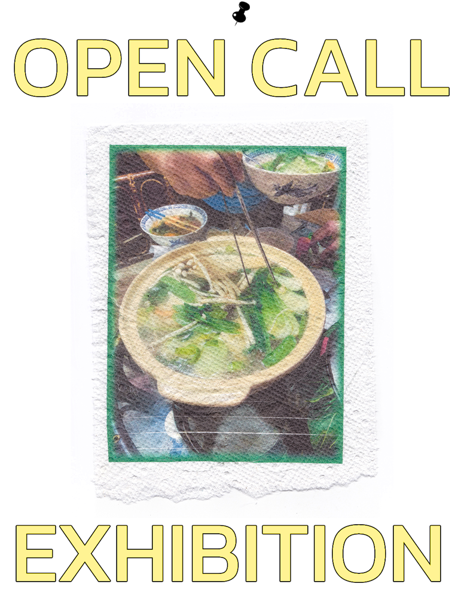
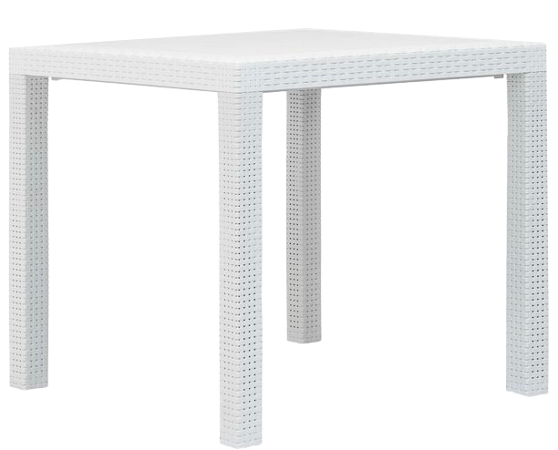
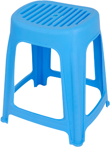
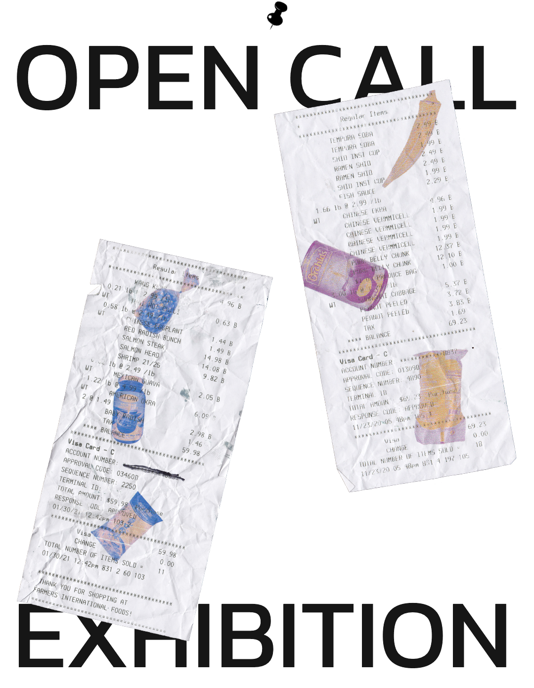
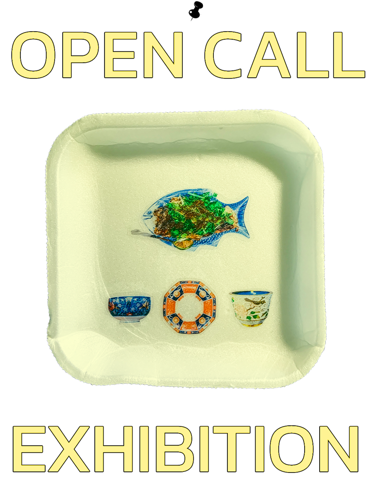

I’ve always been invested in being involved with work that engages in community practices, while in turn: supporting them. I especially love it when art is used as a vehicle to do this.
One of my favorite examples of these types of projects is the Filipino Folk Foundry book, made by Hardworking Goodlooking. The book features the work of local lettering artisans and was produced through local businesses that specialize in making books. Sign painting, Graffiti, and Hand Lettering is an intrinsic part of Filipino living as it encompasses the landscape we live in. By creating this book, Hardworking Goodlooking highlights Philippine artistry while supporting it through sourcing their production locally.
FFF has always inspired me to look at my own environment and assess how I can uplift the people, communities, and issues I care about as a designer. If I had the space and resources, I would love to curate a food related art exhibition/event that showcases young artists of color and involves small businesses owned by people of color. I’ve always loved the implications of food as a way to connect with people and culture.